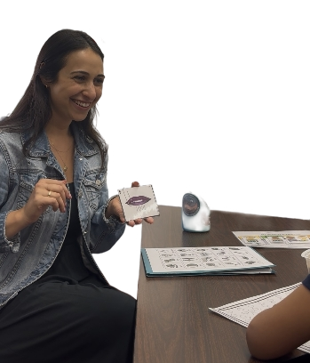

I’m Sabrina Itzhaki, a licensed speech-language pathologist and the founder of this Brooklyn-based private practice. I specialize in helping kids speak more clearly and confidently by turning their interests into meaningful communication goals.
Your child’s passions lead the way. From dinosaurs to superheroes to slime, we build meaningful goals into everyday play.
Skip the commute and settle in. Therapy happens right in your home, where your child feels comfortable and confident.
You’ll never feel left out. I partner with parents every step of the way, offering easy strategies you can use between sessions (no worksheets required).
Hi! I’m Sabrina Itzhaki, a licensed speech-language pathologist, play expert, and proud Brooklyn local.
After five years supporting Pre-K and elementary-aged students across NYC public schools, I created Itzy Bitzy Speech Therapy to bring a fresh, fun, and family-centered approach to speech therapy, one that actually works, because it’s built around what kids love.
At Itzy Bitzy, we don’t just drill sounds... we build confidence, connection, and communication that sticks. Whether your child needs help with clear speech, expressive language, or literacy, I meet them exactly where they are, at home, in their world, and on their terms.
Because here’s the truth: kids learn best when they’re having fun. That’s why my sessions are always:
You'll probably find me wandering through Brooklyn with a croissant in hand, on the hunt for the best bakeries and farmer's markets. I love spending time with my husband and our labradoodle, Melo (we're regulars at the dog park!), and I'm on a mission to visit every U.S. National Park-I've made it to 23 so far!
Speech therapy that's built around your child, not the other way around.
I work with children in Pre-K through elementary school, typically ages 4–11. If you're unsure if your child is the right age for services, feel free to reach out!
I provide home-based services throughout South and Northwestern Brooklyn, including neighborhoods like Park Slope, Carroll Gardens, Cobble Hill, Boerum Hill, Gowanus, Windsor Terrace, and Downtown Brooklyn. . No rushing, no waiting rooms, just cozy, convenient care right where they feel most at ease.
At this time, I primarily offer in-person sessions in Brooklyn. If you're interested in teletherapy, let's chat! In some cases, it may be a great option.
Sessions are either 45 minutes or 1 hour, depending on your child's needs and what works best for your family.
Itzy Bitzy Speech Therapy is a private-pay practice, meaning I don't bill insurance directly. However, I'm happy to provide invoices or documentation if you'd like to submit for out-of-network reimbursement through your insurance provider.
My approach is child-led, play-based, and interest-driven, because kids learn best when they're having fun. I build each session around what your child enjoys, so therapy feels more like play and less like work. Whether your child loves trains, cooking, or video games, we'll use their interests to motivate and engage them every step of the way.
Easy! Just send me a quick message or give me a call. I offer free consultations where we'll talk through your concerns, goals, and whether we're a good fit.
Getting started is easy. I offer free consultations to learn more about your child and discuss how I can help.